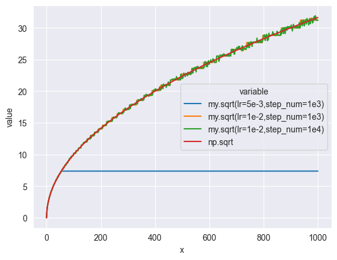
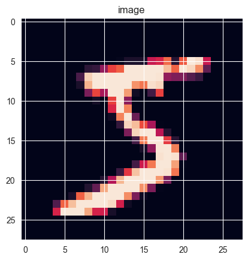
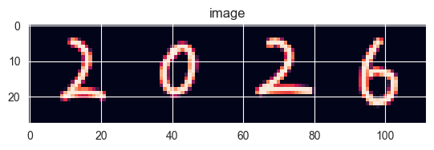

import numpy as npimport pandas as pdimport timeimport seaborn as snsfrom typing import Callable , Tuple
神经元 神经元是神经网络中的基础单元，它包含输入，权重，偏置，输出，激活函数等概念；一个神经元有多个输入 ，每个输入端均有自己的权重 ，将神经元的每一个输入都和自己的权重相乘，将结果相加，最后再和偏置 相加，将结果传递给激活函数 ，得到的便是神经元的输出；神经元可以有多个输出，它们的值相同。使用代码表达的话，神经元的输出为：
def output (xs, ws, bs, activate_fn ):""" :param xs: 输入，为n维实数数组 :param ws: 权重，为n维实数数组 :param bs: 偏置，为实数 :param activate_fn: 激活函数 :return: 输出值 """ return activate_fn(xs.dot(ws) + bs)
在想象特定神经元的时候，应该想象神经元本身和它的输入，就像水母 。
激活函数 激活函数是接受实数返回实数的一元函数，激活函数不能是线性函数 （线性函数就是满足对任意a，b，有f(a + b) = f(a) + f(b)的函数，比如f(x)=2x），常用的激活函数有 sigmoid，ReLU等，它们的定义分别如下：
def sigmoid (x ):return 1 / (1 + np.exp(-x))def ReLU (x ):return np.max (0 , x)
神经网络 神经网络由多层神经元组成，一层神经元由多个神经元组成，第一层和最后一层称为输入层和输出层。神经网络的层数有多种计数方式，这里只计数拥有权重 的层。
假如上一层的输出为[x1, x2, x3]，当前层有两个神经元，偏置和权重分别为w11, w12, w13, b1，w21, w22, w23, b2，则两个神经元的在执行激活函数前 的输出为：
a1 = x1 * w11 + x2 * w12 + x3 * w13 + b1a2 = x1 * w21 + x2 * w22 + x3 * w23 + b2
显然，这可以使用矩阵乘法和加法来描述：
[a1 , a2 ] = [x1 , x2 , x3 ] * [[w11 , w21 ], + [b1,w12 , w22 ], b2]w13 , w23 ]]
只需要将[a1, a2]中每一个元素执行一下激活函数即可得到该层的神经元的输出。这证明，除输入层以外，每一层神经元都可以用一个权重矩阵和一个偏置矩阵来表示。权重矩阵中，每个神经元的权重作为一列并横向拼接，偏置矩阵是一个每个神经元组成的行向量。输入和输出也是行向量 。输入层没有输入和偏置，它的输出由外界给定。
下面会将权重矩阵和偏置矩阵统称为权重矩阵。
输出层使用的激活函数可以与中间层不同，比如对分类问题，可以使用softmax函数，对回归问题，即根据已有的数据去预测 特定输入下的输出的问题，可以使用恒等函数。softmax的实现如下，它的性质是每个输出和该层其它神经元的输出相关联，所有神经元的输出总和为1，这让我们能够赋予每个神经元的输出以“概率”的语义。
def softmax (x ):max (x)return exp_a / np.sum (exp_a)
前向传播 / 推理 把输入丢给神经网络，去获得它的输出，就是所谓的前向传播/推理，下面是一个三层神经网络（中间层第一、二层，输出层，这三层有权重）推理的函数：
1 2 3 4 5 6 7 8 9 10 11 12 13 14 15 16 17 18 19 20 def predict (x, w1, b1, w2, b2, w3, b3, activate_fn, output_activate_fn = lambda x: x ):""" :param x: 输入 :param w1: 第一层的权重矩阵，列数为神经元的数量，行数为输入的数量 :param b1: 第一层的偏置行向量，大小为神经元数量 :param w2: 第二层的权重矩阵，列数为神经元的数量，行数为第一层的神经元的数量 :param b2: 第二层的偏置，大小为神经元数量 :param w3: 输出层的权重矩阵，列数为神经元的数量，行数为第二层的神经元的数量 :param b3: 输出层的偏置，大小为神经元数量 :param activate_fn: 中间层的激活函数 :param output_activate_fn: 输出层的激活函数，比如恒等函数 :return: 输出 """ return z3
梯度 导数，即函数在特定位置上的变化程度，根据数学公式去化简求导所求得的结果称为解析解，去近似地算出的结果称为数值解，数值解是很容易求的——给定尽量小的dx，求出(f(x + dx) - f(x)) / dx即可：
def numerical_diff (f, x, h=1e-4 ):""" 求函数f在位置x上的导数，该操作称为数值微分 numerical differentiation :param f: 一元函数 :param x: 函数入参 :param h: dx :return: 函数f在x处的导数 """ return (f(x + h) - f(x - h)) / (2 * h)lambda x: x ** 2 , 1 )
但光处理一元函数是不够的，我们需要处理多元函数的导数，即该函数对每一个参数的偏导数；求特定参数序列下任意一个参数的偏导数，就是固定其它参数，对该参数求导数，这个行为很像柯里化 。所有偏导数组成的序列称为梯度。
下面是求梯度的函数：
1 2 3 4 5 6 7 8 9 10 11 12 13 14 15 16 17 18 def gradient (f, x, h=1e-4 ):""" :param f: 要求梯度的函数 :param x: 函数参数，以任意维数组的形式 :param h: dx :return: """ for i, _ in np.ndenumerate(x): 2 * h)return res
显然，该方法能够尽量减少对象拷贝，移动的损失，但它同时是线程不安全的，无法并发执行，将来必须改良。
梯度下降法 梯度表明了函数在当前“位置”上的运动的“趋势”，对每一个偏导数，当它大于0时，就意味着向该方向运动时，该方向的值会变大，小于0时，向该方向运动时，该方向的值会变小。这意味着，只要向梯度的符号相反的方向运动，值必定会减小，这意味着我们能够找到函数的（可能是局部也可能是全局的）最小值 （或者最大值，这无关紧要）。根据梯度找到函数的最小值的方法称为梯度下降法。
下面的函数使用梯度下降法实现了求解平方根，思路是构造这样一个函数，它的最小值即为所求的平方根，然后找到一个初始值，不断往梯度下降的方向去移动，最终会找到函数的局部或全局的最小值 ：
1 2 3 4 5 6 7 8 9 10 11 12 13 14 15 16 17 18 19 20 21 22 23 24 25 26 27 28 29 30 31 32 33 34 35 36 37 38 39 40 41 42 43 44 45 46 47 48 49 50 51 52 53 54 55 56 def sqrt (x, lr=1e-3 , step_num=1000 ) -> float :""" 使用梯度法求平方根 :param x: 入参 :param lr: learn rate，学习率 :param step_num: 步数 :return: """ 1 ], dtype=np.float64)def h (_ ):return np.abs (x - d[0 ] * d[0 ])for _ in range (step_num):return d[0 ]def drawSqrt ():0 , 1000 , 500 )def sqrt (x,lr,step_num ):def h (d ):return np.abs (x - d * d)1 for _ in range (step_num):return d'x' : xs,'my.sqrt(lr=5e-3,step_num=1e3)' : sqrt(xs, lr=1e-3 , step_num=int (1e3 )),'my.sqrt(lr=1e-2,step_num=1e3)' : sqrt(xs, lr=1e-2 , step_num=int (1e3 )),'my.sqrt(lr=1e-2,step_num=1e4)' : sqrt(xs, lr=1e-2 , step_num=int (1e4 )),'np.sqrt' : np.sqrt(xs)'x' ), x='x' , y='value' , hue='variable' )

梯度下降法有两个超参数 （超参数即非神经网络通过训练得到，而是手动设定的参数）：学习率和步数，学习率表示每次要向梯度下降的方向移动多大距离，步数表示移动的次数，学习率需要被合适地设定，过大和过小都会导致无法得到正确结果，比如上面的例子。
反向传播/神经网络的学习 正向传播就是把输入喂给神经网络，得到输出的过程，反向传播就是给定输入和期望的输出，根据期望的输出和实际的输出的关系去反向更新权重的过程 。神经网络中，可以使用梯度下降法进行反向传播。
首先需要定义我们需要应用梯度下降法的函数。该函数的参数为权重矩阵，返回值代表期望输出和实际输出的“距离” 。该函数称为损失函数 ，我们可以通过梯度下降法逐渐逼近损失函数的最小值，即让期望输出和实际输出最小的权重矩阵 ，一趟训练的一般过程如下，和sqrt的形式基本一致：
def train (W, x, t, lr, step_num ):def loss (W ):return distance(precict(x, W), t)for _ in range (step_num):return W
在实际操作中，我们不会对每一个训练数据都去进行梯度下降法，而是每次找到n个比如100个数据去做批处理，这既是去避免单个数据的特殊性，也能减少计算量。但同时也不会选择所有数据去进行学习，这又会增加计算量。每次随机选择特定数量的数据去训练的方法称为mini-batch，训练过程中使用梯度下降法进行反向传播，这整个称为随机梯度下降法SGD 。
损失函数 损失函数需要求得期望输出和实际输出的“距离”，在处理多个输出时，损失函数需要求得每一个输出的“平均损失”，这个除以N就行。
常用的损失函数包括均方误差，交叉熵误差，它们的定义如下：
1 2 3 4 5 6 7 8 9 10 11 12 13 14 15 16 17 def mean_squared_error (y, t ):""" 均方误差，为“距离”的平方的一半 :param y: 实际输出 :param t: 期望输出 :return: """ return np.sum ((y - t) ** 2 ) / 2 def cross_entropy_error (y, t ):if y.ndim == 1 :1 , t.size)1 , y.size)0 ]return -np.sum (t * np.log(y + 1e-7 )) / batch_size
capstone 0: MNIST 识别手写数字 Hello, World! 这恐怕是最复杂的Hello World了。
MNIST数据集中的数据为28x28灰度像素表示的手写数字，其有60000条训练数据，10000条测试数据，每条数据包含该像素矩阵和对应数字值，下面拿它开刀，训练一个识别手写数字的神经网络。
数据文件从这里 下载，读取数据的代码拷贝自这里 。
首先设计神经网络的大小，这里设计一个两层神经网络（输入层，一个有权重的隐藏层，有权重的输出层），其中输入层的大小为28x28=784，即每个像素（这里丢掉长宽信息），第一个隐藏层为100个神经元，输出层为10个神经元，它们的输出分别表示数字为0-9的概率；隐藏层的激活函数使用sigmoid，输出层的激活函数使用softmax（这是个分类问题）。
在计算损失函数时，目标输出采用one-hot的形式，即只有一个元素为1的数组，如7会表示成[0, 0, 0, 0, 0, 0, 0, 1, 0, 0]。
一般流程如下：
设置超参数（批大小，训练次数，训练集大小，学习率） 随机抽取mini-batch 计算这批数据的损失函数的梯度 根据梯度和学习率更新参数 # 每一个mini-batch只移动一次梯度！ 记录当前的损失函数的返回值供统计
整个代码实现如下：
1 2 3 4 5 6 7 8 9 10 11 12 13 14 15 16 17 18 19 20 21 22 23 24 25 26 27 28 29 30 31 32 33 34 35 36 37 38 39 40 41 42 43 44 45 46 47 48 49 50 51 52 53 54 55 56 57 58 59 60 61 62 63 64 65 class TwoLayerNet :def __init__ (self, input_size: int , hidden_size: int , output_size: int , activation_function: Callable = sigmoid, loss_function: Callable = cross_entropy_error, output_activation_function: Callable = softmax ):def predict (self, x ):""" 正向传播 :param x: 入参数组，需为二维，每一行为一个输入 :return: """ return self.output_activation_function(t1 @ self.w2 + self.b2)def train (self, x, t, lr=0.1 ):""" 一次批训练，流程是根据输入，输出数据集去构造损失函数（它的参数是权重），然后求出此时的权重的梯度，将权重向梯度方向移动 需注意的是，这里对每一个mini-batch，只移动一次！ :param x: 输入数据集 :param t: 期望输出数据集 :param lr: 学习率 :return: 当前的损失，以及梯度 """ def loss (_ ):""" 损失函数 :param _: 权重，这里通过闭包引入，在predict中被使用 :return: 当前权重下的损失 """ return self.loss_function(self.predict(x), t)return loss(0 ), (w1, b1, w2, b2)def accuracy (self, x, t ):""" 根据测试数据计算准确率 :param x: 测试数据输入 :param t: 测试数据期望输出 :return: """ 1 ) 1 )sum (y == t) / float (x.shape[0 ])return accuracy
下面加载数据集，让银河燃烧吧。
1 2 3 4 5 6 7 8 9 10 11 12 13 14 15 16 17 18 19 20 21 22 23 24 25 26 27 import pickleimport osfrom mnist.MnistDataloader import MnistDataloaderdef readMnist () -> Tuple [np.ndarray, np.ndarray, np.ndarray, np.ndarray]:if os.path.exists('mnist/data.pickle' ):with open ('mnist/data.pickle' , 'rb' ) as f:return pickle.load(f)'mnist/train-images.idx3-ubyte' ,'mnist/train-labels.idx1-ubyte' ,'mnist/t10k-images.idx3-ubyte' ,'mnist/t10k-labels.idx1-ubyte' ).load_data()60000 , 784 )10000 , 784 )10 )[train_labels] 10 )[test_labels]with open ('mnist/data.pickle' , 'xb' ) as f:return res
先检查一下是否正确读取了，读取一下第一张图片看看效果：
def img_show (img ):from PIL import Imageimport matplotlib.pyplot as plt'on' ) 'image' ) print (np.argmax(train_labels[0 ])) 0 ].reshape(28 , 28 ))

开干！下面的代码同样做了缓存，保证每次测试都能用上上一次的结果。
在执行该代码时，会发现其执行速率是极为缓慢的，瓶颈可能在计算梯度时，计算梯度的时候会对每一个参数进行两次前向传播，在这里每一次计算梯度需要进行 (w1.size + w2.size + b1.size + b2.size) * 2 = (784 * 100 + 100 * 10 + 100 + 10) * 2 = 159020次前向传播……这效率是令人崩溃的。因此这里修改了隐藏层神经元的数量到10，把计算量基本降低了一个数量级，但好像仍然跑的通？？
1 2 3 4 5 6 7 8 9 10 11 12 13 14 15 16 17 18 19 20 21 22 23 24 25 26 27 28 29 30 31 0 ] 200 500 0.1 def doTraining ():def createNet ():if os.path.exists('mnist/net.pickle' ):with open ('mnist/net.pickle' , 'rb' ) as f:return pickle.load(f)784 , 10 , 10 )return netfor i in range (iter_num):print (f'{i + 1 } /{iter_num} : {end - start:.2 f} s, loss: {loss:.3 f} , acc: {net.accuracy(test_images, test_labels):.4 f} ' )with open ('mnist/net.pickle' , 'wb' ) as f:
这种全连接的，稀松平常的神经网络似乎称为MLP（多层感知机）。而这篇笔记或许就到这里了，因为下一章会对当前架构大改……看来这个是出不了成果了。但知识留着了。
最后的最后，必须得拿真实的数据去实践一下，无论效果如何，下面是一张28x112的png文件，内容是手写的2026，看看我们的人工智障会输出什么东西。
1 2 3 4 5 6 7 8 9 10 11 12 13 14 15 16 17 18 19 20 21 def split_image (image_path ):from PIL import Imageopen (image_path)for i in range (0 , height, 28 ):for j in range (0 , width, 28 ):28 , i+28 )for pixel in img.crop(box).getdata():round (0.299 * pixel[0 ] + 0.587 * pixel[1 ] + 0.114 * pixel[2 ])255 - np.array(gray_pixels))return np.array(result)'mnist/2026.png' )4 , 28 , 28 ), axis=1 ))with open ('mnist/net.pickle' , 'rb' ) as f:print (np.argmax(net.predict(images), axis=1 ))

哈哈哈哈哈哈哈哈哈哈哈哈哈